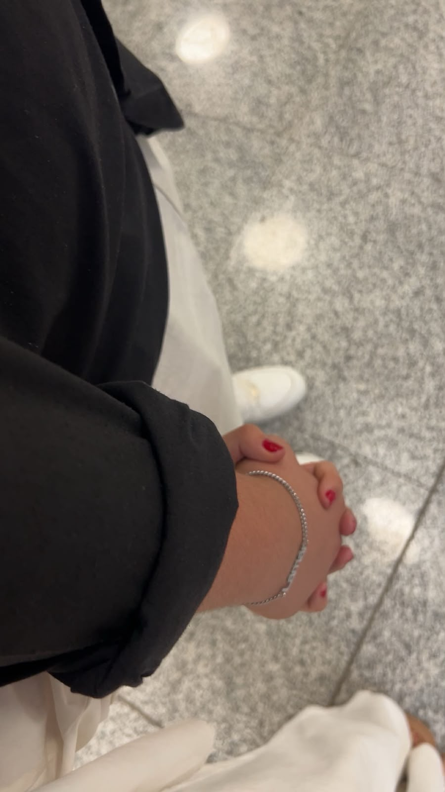
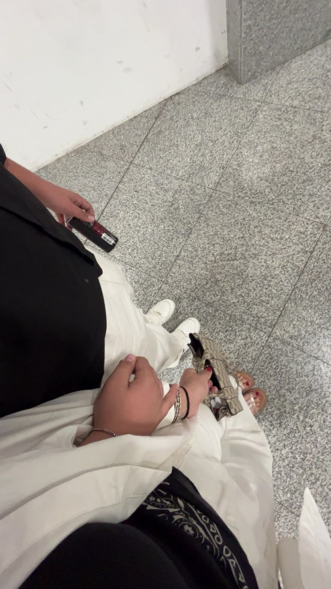
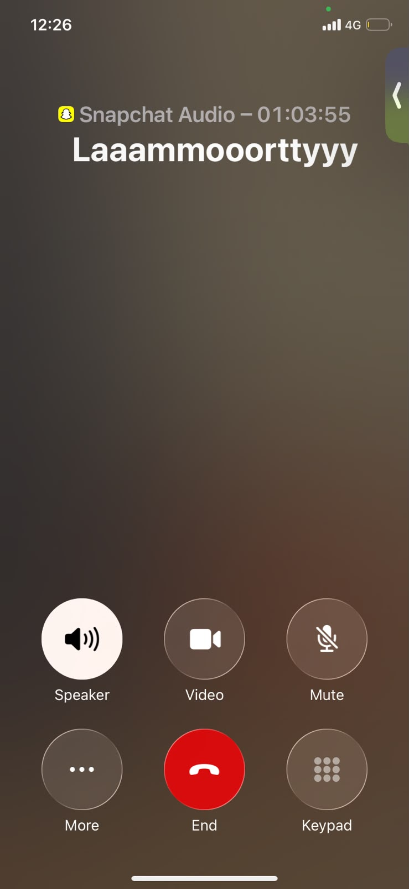
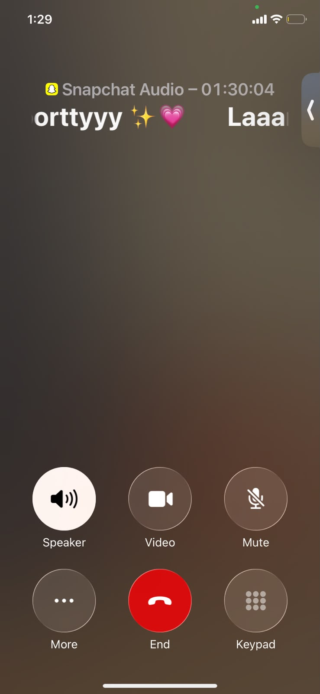
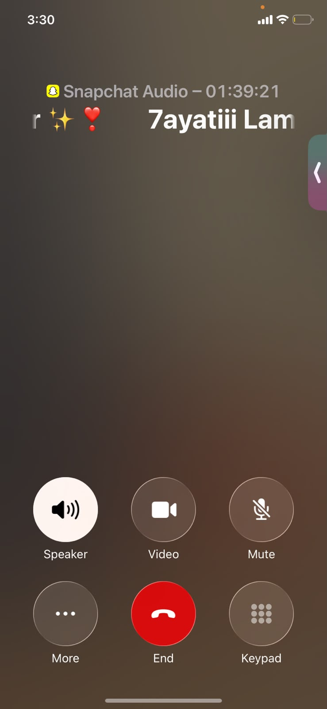
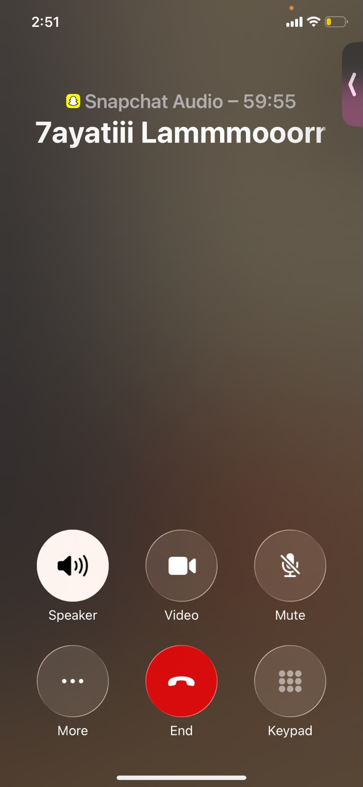
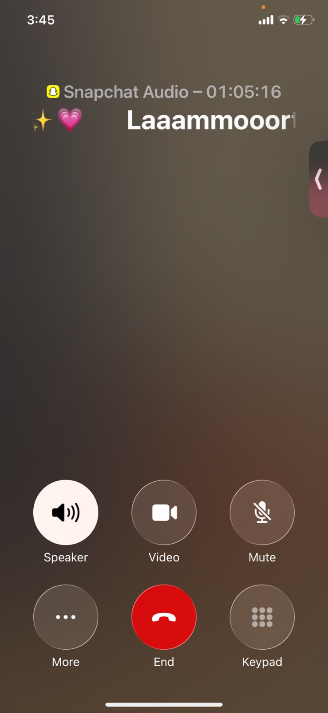
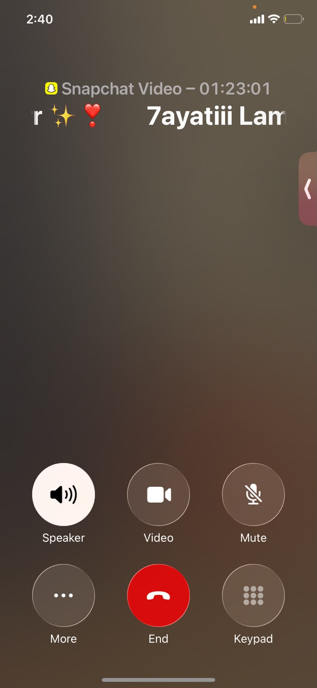
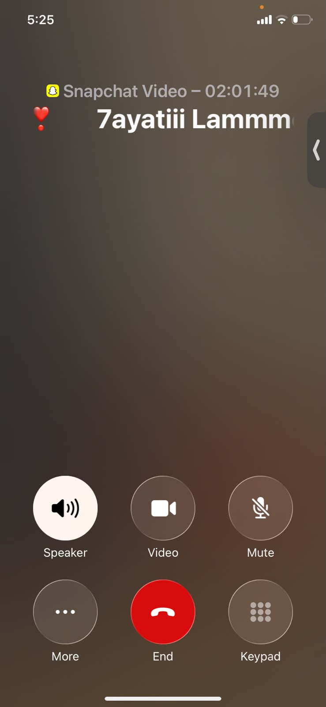
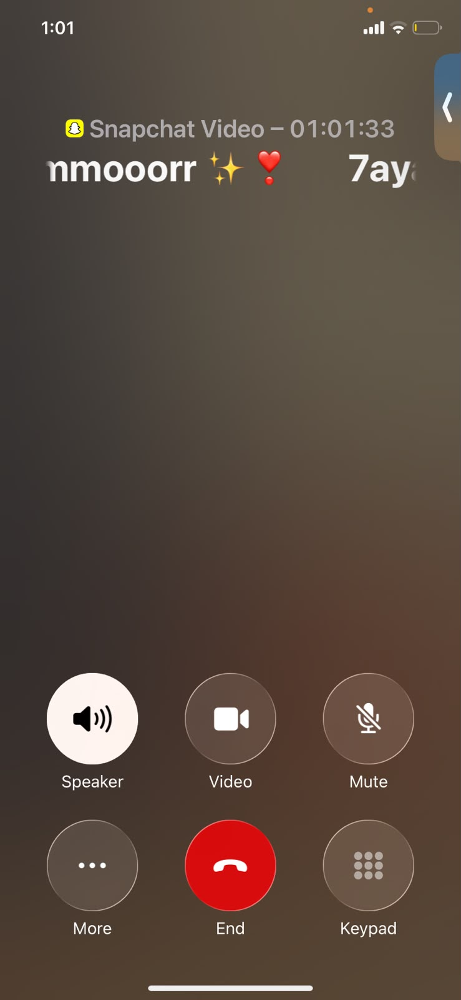

20.5.2026
يوم الاعتراف
في هذا اليوم، اعترف يامن بحبه لِلمار، وبدأ كل شيء بصدقٍ ووضوحٍ وتفاصيل بسيطة جعلت القلب يفتح أبوابه.
قصتنا بدأت هنا
قصة حب لا تحتاج إلى كلمات كثيرة
البداية كانت مجرد كلمة، ثم تحولت إلى قلبٍ يكتمل، وبدأت رحلةٌ جميلة بين يامن ولمار، حيث الحب صار وطنًا، والذكريات أصبحت أشهى من كل شيء.
“من أول نظرة، بدأت القلوب تتفق، ومن أول كلمة، بدأ الحب يكتب نفسه على كل ثانية.”
قصتنا
في يوم 20.5.2026، كان ذلك اليوم الذي اعترف فيه يامن بحبه لِلمار، ولم يكن الاعتراف مجرد كلمة، بل كان بدايةُ طريقٍ يفتح قلبين على بعضهما ببطء، بصدق، وبحبٍ لا يعرف حدودًا.
ثم جاء اليوم الذي تلاقيا فيه في عمان، في مكة مول، عند الساعة 5:15 مساءً، وكانت تلك اللحظة كأن القصة نفسها توقفت فقط لتستمتع بهدوء هذا اللقاء الرائع. من تلك اللحظة، أصبحت كل تفاصيل اليوم، وكل ضحكة، وكل نظرة، جزءًا من قصةٍ رمزية لا تُنسى.
واليوم، بعد كل واحدٍ وعشرين شهرًا من السهر، اللقيا، السعادة، والحكايات الصغيرة، صار الحب أقوى وأكثر دفئًا. ما بيننا ليس مجرد حكاية، بل أمانٌ، وضوء، وربطٌ قلوب لا يملُّ من العطاء.
عندما يُعشق القلب، لا تحتاج الكلمة إلى أن تكون طويلة؛ يكفي أن تكون صادقة، ويكفي أن تتذكر أن الحب يذكرنا بأن العالم يصبح أجمل حين يكون فيه شخصٌ ما يضاعف لك الحُب.
أحبك ببطء، وأحملك ببطء
مراحل القصة
في هذا اليوم، اعترف يامن بحبه لِلمار، وبدأ كل شيء بصدقٍ ووضوحٍ وتفاصيل بسيطة جعلت القلب يفتح أبوابه.
في عمان، في مكة مول، عند الساعة 5:15 مساءً، التقى القلبان، وبدأت تلك اللحظة تُكتب في الذاكرة كأول فصلٍ من فصلين لا ينتهين.
من كل مكالمة، كل رسائل، كل لحظة سكونٍ، وبكل تفاصيل الحياة، أصبح الحب أقرب إلى وطنٍ يسكن داخلنا.
صور من اللقاء


الفيديوهات
صور من بعض المكالمات








لِلمار
كل يوم أكتشف فيكِ شيئًا جديدًا يجعلني أعي أنه لا يوجد أشهى من أن أكون بجانبكِ، وأن كل لحظة تجمعنا تُعيدني إلى قلبٍ يفرح عندما يذكر اسمكِ. أنتِ قبلة الأمان، ضحكتكِ هي النسمة، وأنتِ في كل حلمٍ أراه، كنتِ.
— يامنAlways Forever promise
هضل احبك مهما تغيرت الأيام، وهاحميك بحبّي كثير، وبتسمّيني دوماً عندما يشتد الهمّ، لأنكِ ليستِ مجرد حبّ، بل أنتِ وطنٌ في قلبي.
كل اشي رح يعدي، لكني سأبقى أحبكِ، وأصونكِ، وأحملكِ في قلبي forever.
To the love of my life
من أول نظرة، إلى كل ليلة، إلى كل حلم، أنتِ النهاية اللي كنت أبحث عنها.